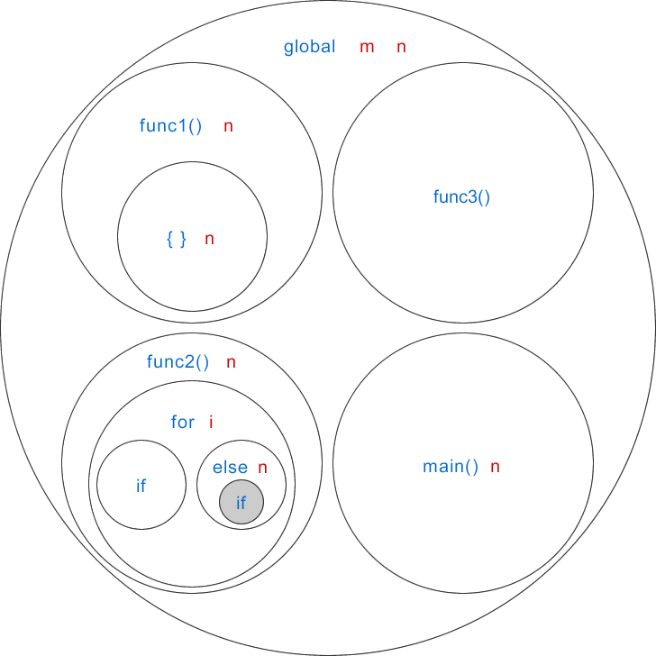
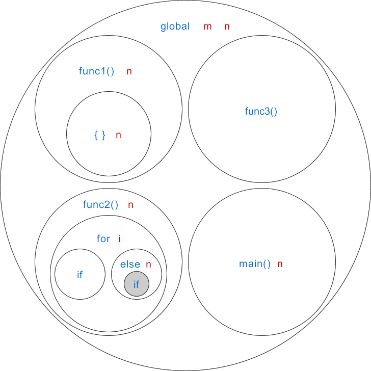

C语言块级变量：在代码块内部定义的变量
所谓代码块，就是由
C语言允许在代码块内部定义变量，这样的变量具有块级作用域；换句话说，在代码块内部定义的变量只能在代码块内部使用，出了代码块就无效了。
上节我们已经讲解了函数，在函数内部定义的变量叫做局部变量，这节我们接着讲解选择结构和循环结构。
【实例1】定义一个函数 gcd()，求两个整数的最大公约数。
The greatest common divisor is 20
读者暂时不用理解 gcd() 函数的思路，只需要关注 temp1 和 temp2 这两个变量，它们都是在代码块内部定义的块级变量，temp1 的作用域是 if 内部，temp2 的作用域是 while 内部。
如果一个变量只在 for 循环内部使用，就可以将它定义在循环条件里面，这样做可以避免在函数开头定义过多的变量，使得代码结构更加清晰，所以我鼓励大家这样做，当然，前提是你的编译器支持。
【实例2】定义一个函数 strchar()，查看给定的字符是否位于某个字符串中。
block n: 40
main n: 22
这里有两个 n，它们位于不同的作用域，不会产生命名冲突。{ } 的作用域比 main() 更小，{ } 内部的 printf() 使用的是编号为②的 n，main() 内部的 printf() 使用的是编号为①的 n。
下面我们通过具体的代码来演示：

蓝色表示作用域的名称，红色表示作用域中的变量，global 表示全局作用域。在灰色背景的作用域中，我们使用到了 m 变量，而该变量位于全局作用域中，所以得穿越好几层作用域才能找到 m。
{ }包围起来的代码。代码块在C语言中随处可见，例如函数体、选择结构、循环结构等。不包含代码块的C语言程序根本不能运行，即使最简单的C语言程序（上节已经进行了展示）也要包含代码块。C语言允许在代码块内部定义变量，这样的变量具有块级作用域；换句话说，在代码块内部定义的变量只能在代码块内部使用，出了代码块就无效了。
上节我们已经讲解了函数，在函数内部定义的变量叫做局部变量，这节我们接着讲解选择结构和循环结构。
【实例1】定义一个函数 gcd()，求两个整数的最大公约数。
#include <stdio.h>
//函数声明
int gcd(int a, int b); //也可以写作 int gcd(int, int);
int main(){
printf("The greatest common divisor is %d\n", gcd(100, 60));
return 0;
}
//函数定义
int gcd(int a, int b){
//若a<b，那么交换两变量的值
if(a < b){
int temp1 = a; //块级变量
a = b;
b = temp1;
}
//求最大公约数
while(b!=0){
int temp2 = b; //块级变量
b = a % b;
a = temp2;
}
return a;
}
运行结果：The greatest common divisor is 20
读者暂时不用理解 gcd() 函数的思路，只需要关注 temp1 和 temp2 这两个变量，它们都是在代码块内部定义的块级变量，temp1 的作用域是 if 内部，temp2 的作用域是 while 内部。
在 for 循环条件里面定义变量
遵循 C99 标准的编译器允许在 for 循环条件里面定义新变量，这样的变量也是块级变量，它的作用域仅限于 for 循环内部。例如，计算从 m 累加到 n 的和：
#include <stdio.h>
int sum(int m, int n);
int main(){
printf("The sum from 1 to 100 is %d\n", sum(1, 100));
return 0;
}
int sum(int m, int n){
int sum = 0;
for(int i=m; i<=n; i++){ //i是块级变量
sum += i;
}
return sum;
}
变量 i 定义在循环条件里面，所以是一个块级变量，它的作用域就是当前 for 循环，出了 for 循环就无效了。如果一个变量只在 for 循环内部使用，就可以将它定义在循环条件里面，这样做可以避免在函数开头定义过多的变量，使得代码结构更加清晰，所以我鼓励大家这样做，当然，前提是你的编译器支持。
【实例2】定义一个函数 strchar()，查看给定的字符是否位于某个字符串中。
#include <stdio.h>
#include <string.h>
int strchar(char *str, char c);
int main(){
char url[] = "http://c.biancheng.net";
char letter = 'c';
if(strchar(url, letter) >= 0){
printf("The letter is in the string.\n");
}else{
printf("The letter is not in the string.\n");
}
return 0;
}
int strchar(char *str, char c){
for(int i=0,len=strlen(str); i<len; i++){ //i和len都是块级变量
if(str[i] == c){
return i;
}
}
return -1;
}
循环条件里面可以定义一个或者多个变量，这段代码我们就定义了两个变量，分别是 i 和 len，它们都是块级变量，作用域都是当前 for 循环。
单独的代码块
C语言还允许出现单独的代码块，它也是一个作用域。请看下面的代码：
#include <stdio.h>
int main(){
int n = 22; //编号①
//由{ }包围的代码块
{
int n = 40; //编号②
printf("block n: %d\n", n);
}
printf("main n: %d\n", n);
return 0;
}
运行结果：block n: 40
main n: 22
这里有两个 n，它们位于不同的作用域，不会产生命名冲突。{ } 的作用域比 main() 更小，{ } 内部的 printf() 使用的是编号为②的 n，main() 内部的 printf() 使用的是编号为①的 n。
再谈作用域
每个C语言程序都包含了多个作用域，不同的作用域中可以出现同名的变量，C语言会按照从小到大的顺序、一层一层地去父级作用域中查找变量，如果在最顶层的全局作用域中还未找到这个变量，那么就会报错。下面我们通过具体的代码来演示：
#include <stdio.h>
int m = 13;
int n = 10;
void func1(){
int n = 20;
{
int n = 822;
printf("block1 n: %d\n", n);
}
printf("func1 n: %d\n", n);
}
void func2(int n){
for(int i=0; i<10; i++){
if(i % 5 == 0){
printf("if m: %d\n", m);
}else{
int n = i % 4;
if(n<2 && n>0){
printf("else m: %d\n", m);
}
}
}
printf("func2 n: %d\n", n);
}
void func3(){
printf("func3 n: %d\n", n);
}
int main(){
int n = 30;
func1();
func2(n);
func3();
printf("main n: %d\n", n);
return 0;
}
下图展示了这段代码的作用域：
蓝色表示作用域的名称，红色表示作用域中的变量，global 表示全局作用域。在灰色背景的作用域中，我们使用到了 m 变量，而该变量位于全局作用域中，所以得穿越好几层作用域才能找到 m。
关注公众号「站长严长生」，在手机上阅读所有教程，随时随地都能学习。内含一款搜索神器，免费下载全网书籍和视频。

微信扫码关注公众号